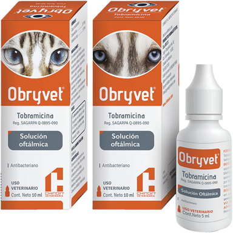
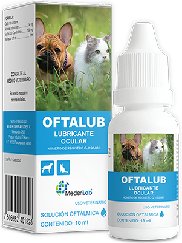
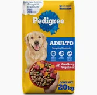
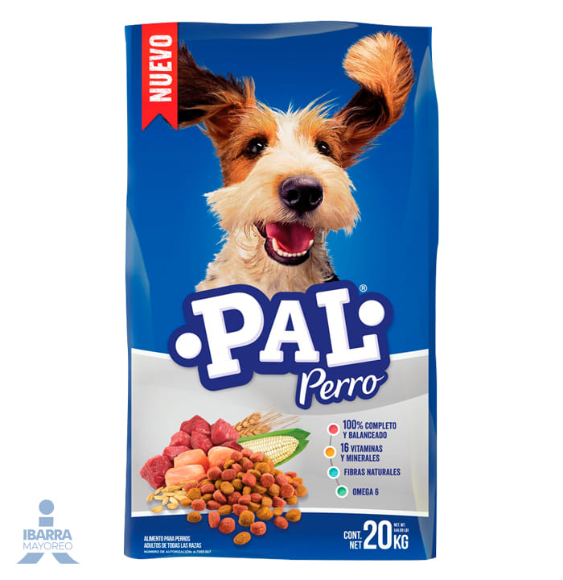
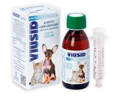

| prductos disponibles | Descripcion |
|  | Tobramicina Antibiótico Oftálmico INFORMACIÓN PARA EL MÉDICO VETERINARIO FÓRMULA: Cada ml contiene Tobramicina…………………………3.0 mg Excipiente c.b.p. ....................................1 ml INDICACIONES: Para el tratamiento de infecciones superficiales del globo ocular como blefaritis, blefaroconjuntivitis, conjuntivitis, diacriocistitis, queratitis ulcerativas, queratoconjuntivitis, meibomitis, causadas por bacterias susceptibles. MECANISMO DE ACCIÓN: La tobramicina es un antibiótico bactericida de amplio espectro que pertenece al grupo de los aminoglucósidos. Es efectivo contra bacterias aerobias Gram negativas y algunas aerobias Gram positivass, incluyendo la mayoría de las especies de Escherichia coli, Klebsiella sp., Proteus sp., Enterobacter spp., Serratia spp., Mycoplasma spp., Streptococcus sp., Sthaphyloccus sp., Bacillus sp y Pseudomona aeruginosa. También es efectivo contra microorganismos resistentes a la gentamicina y a otros antibióticos, pues es menos susceptible de ser inactivado por enzimas bacterianas. Su mecanismo de acción consiste en inhibir la síntesis de proteínas bacterianas (se une a los ribosomas de las células bacterianas, ocasionando la transcripción incorrecta del RNAm). CONTRAINDICACIONES: Hipersensibilidad a los componentes de la fórmula. DOSIS Y VÍA DE ADMINISTRACIÓN: Oftálmica. |
|  | OFTALUB es una solución oftálmica indicada para tratar la insuficiencia lagrimal y queratitis seca. Su fórmula a base de alcohol polivinílico y sulfato de condroitina favorece la cicatrización y protege con una película a la córnea y a la conjuntiva de la irritación mecánica. |
|  | Pal Perro es un alimento 100% completo y balanceado para perros, diseñado para cubrir todas las necesidades nutrimentales de las mascotas manteniendo la mejor relación entre precio y nutrición. Además, su fórmula contiene proteína de calidad y cuenta con la presencia de 16 vitaminas y minerales esenciales para una vida saludable. Bienestar para tu amigo fiel Brinda nutrición completa y balanceada Elaborado a base de carnes, caldo de pollo y cereales Adicionado con vitaminas y minerales Promueve la salud de tu peludo Análisis Garantizado Proteína 16% Grasa 5% Fibra 6% |
|  | alimento seco es elaborado bajo estrictos estándares de calidad y basado en el conocimiento científico de WALTHAM®, una autoridad líder en nutrición animal. Las recetas de PEDIGREE® ayudan a su sistema inmune gracias a su contenido de antioxidantes, vitamina E y Selenio. Además, están hechas con Omega 6 que ayudan a una piel y pelo saludables, así como con fibras y proteína de alta calidad que ayudan a una óptima digestión y heces firmes fáciles de recoger. |
|  | Es un preparado nutricional compuesto por antioxidantes, vitaminas, oligoelementos y un componente que se extrae de la raíz del regaliz (ácido glicirricínico) con propiedades antivirales. Está especialmente diseñado para el aumento de las defensas inmunológicas. Ideal por tanto en todos aquellos procesos que causan inmunodeficiencia. Es de sobra conocido que el aporte de nutrientes con carácter antioxidante es fundamental para garantizar el correcto funcionamiento del sistema inmunológico. Viusid Pets constituye en este sentido una garantía. Aumenta de forma natural la respuesta antiviral La activación de los ingredientes de Viusid Pets aumenta su actividad biológica e incrementa sus funciones antioxidantes y antivirales, proporcionando un aumento de la capacidad natural de respuesta inmune de los animales Especial para neonatos y gestantes Por su composición a base de productos naturales carece de efectos secundarios RECOMENDACIONES DE USO: PERROS y GATOS :1 ml por cada 5 kg de peso cada 12 horas. . OTRAS MASCOTAS:1 ml cada 12 horas. |